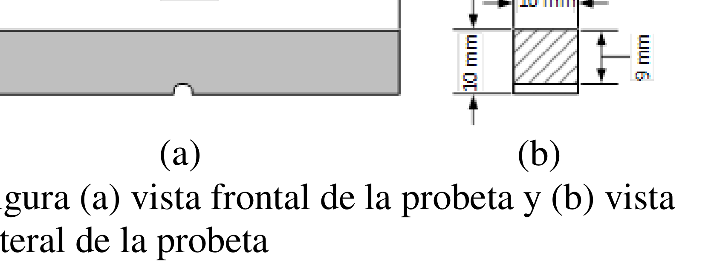
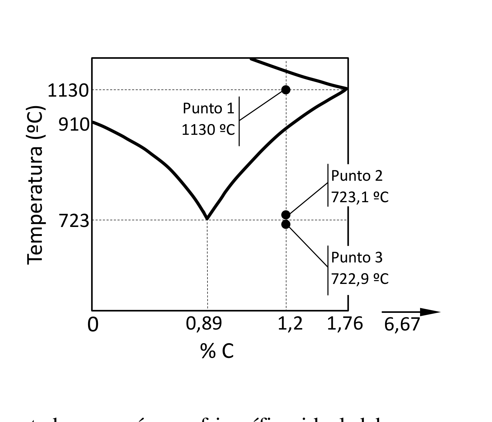
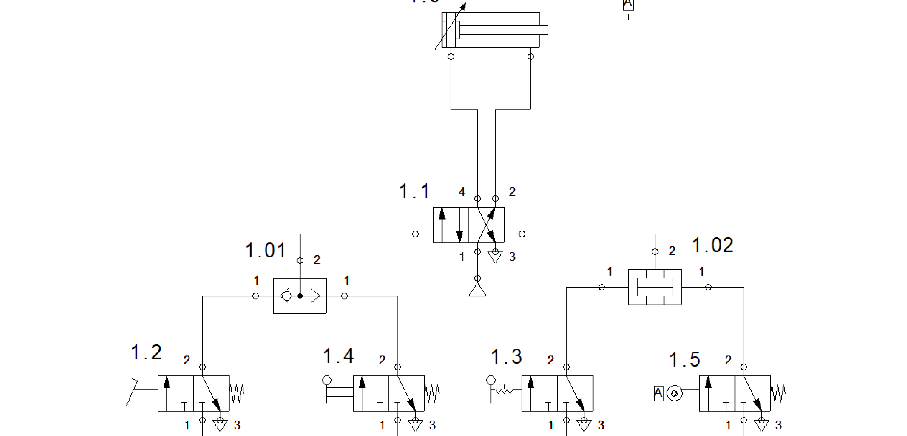
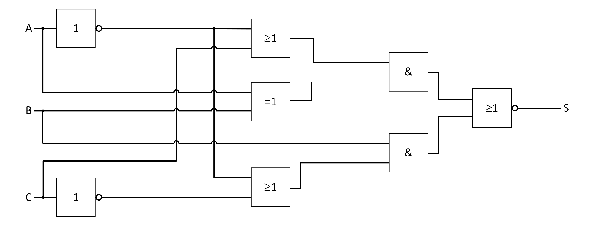
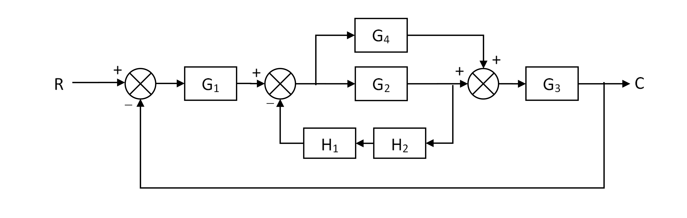

EBAU 2024 · Tecnología e Ingeniería II · Cantabria · Ordinaria
El alumno debe escoger cinco ejercicios de los diez propuestos (cada uno vale 2 puntos). Aquí se resuelven todos. Selecciona un bloque o un ejercicio en la barra lateral: cada uno incluye el enunciado oficial, una introducción con los conceptos que se aplican y la solución paso a paso.
Bloque 1 · Materiales y termodinámica
Ensayo de resiliencia (Charpy), diagrama Hierro-Carbono y una máquina frigorífica ideal.
Bloque 2 · Neumática
Identificación de componentes y funcionamiento de una instalación neumática con cilindro de doble efecto.
Bloque 3 · Sistemas digitales
Función canónica, simplificación por Karnaugh, implementación con NAND y análisis de un circuito lógico.
Bloque 4 · Ciberseguridad e Inteligencia Artificial
Amenazas comunes de ciberseguridad y concepto y aplicaciones de la inteligencia artificial.
📄 Enunciado
En el estudio de resiliencia de un material mediante el ensayo Charpy, la maza de 35 kg cae desde una altura de 750 mm sobre la probeta cuyas dimensiones se presentan en la figura. Después de romper la probeta, la maza se ha elevado hasta una altura de 46 cm. Se pide:
- Calcular la energía absorbida por la probeta en la rotura. (0,7 ptos.)
- Resiliencia del material de la probeta. (0,8 ptos.)
- Si la resiliencia del material fuese nula, indica hasta qué altura se elevaría la maza, suponiendo que no existe rozamiento. (0,5 ptos.)

💡 ¿Qué vamos a aplicar?
El péndulo de Charpy mide la energía absorbida en la rotura por diferencia de energía potencial de la maza entre la altura inicial y la final: \(E_a=m\,g\,(h_1-h_2)\). La resiliencia es esa energía por unidad de sección resistente bajo la entalla: \(\rho=E_a/S\).
a) Energía absorbida en la rotura
La maza pierde energía potencial entre la altura de partida \(h_1=0{,}75\text{ m}\) y la de rebote \(h_2=0{,}46\text{ m}\); esa diferencia es la energía que ha consumido en romper la probeta:
b) Resiliencia del material
La sección resistente es la de la probeta bajo la entalla: ancho 10 mm por altura resistente 9 mm (la entalla reduce 1 mm los 10 mm de canto):
c) Altura de rebote si la resiliencia fuese nula
Resiliencia nula significa que la probeta no absorbe energía: la maza conservaría toda su energía mecánica. Sin rozamiento, subiría de nuevo hasta la altura de partida:
📄 Enunciado
El diagrama de equilibrio de la figura representa el diagrama Hierro-Carbono en la zona de los aceros. Disponemos de una aleación de 300 kg con un 1,20 % de Carbono. Para los tres puntos indicados en la gráfica se pide:
- Masa de cementita libre (proeutectoide). (0,8 ptos.)
- Masa de perlita. (0,6 ptos.)
- Masa de ferrita y cementita dentro de la perlita. (0,6 ptos.)

💡 ¿Qué vamos a aplicar?
Es un acero hipereutectoide (1,20 % > 0,89 % de la eutectoide). Al enfriar, entre la línea Acm y la eutectoide (723 ºC) precipita cementita proeutectoide (libre) en el borde de grano; al cruzar la eutectoide, la austenita restante (0,89 % C) se transforma en perlita. Todo se calcula con la regla de la palanca (cementita 6,67 % C, ferrita ≈ 0 % C).
a) Cementita libre (proeutectoide)
Justo por encima de la eutectoide (Punto 2, 723,1 ºC) coexisten austenita (0,89 % C) y cementita (6,67 % C). La fracción de cementita proeutectoide se obtiene con la palanca respecto a 1,20 % C:
b) Masa de perlita
La perlita procede de toda la austenita (0,89 % C) que quedaba justo antes de la eutectoide; su fracción es el resto:
c) Ferrita y cementita dentro de la perlita
La perlita (0,89 % C) es una mezcla de ferrita (≈ 0 % C) y cementita (6,67 % C). Aplicando la palanca dentro de la perlita:
📄 Enunciado
Para conservar las verduras, una cámara frigorífica ideal debe mantener su interior a 2 ºC. La máquina está en un almacén a 22 ºC y absorbe 36 cal por segundo del foco frío. Se pide:
- Eficiencia de la cámara frigorífica. (0,8 ptos.)
- Calor cedido por la máquina al recinto, en calorías. (0,6 ptos.)
- Trabajo consumido por el compresor eléctrico. (0,6 ptos.)
💡 ¿Qué vamos a aplicar?
Una máquina frigorífica ideal trabaja según el ciclo de Carnot inverso. Su eficiencia (COP frigorífico) depende solo de las temperaturas absolutas: \(\varepsilon=\dfrac{T_f}{T_c-T_f}\). El balance energético es \(Q_c=Q_f+W\), con \(W=Q_f/\varepsilon\).
a) Eficiencia (COP frigorífico de Carnot)
Pasamos a kelvin: \(T_f=2+273=275\text{ K}\), \(T_c=22+273=295\text{ K}\).
b) Calor cedido al recinto (foco caliente)
En un ciclo de Carnot \(\dfrac{Q_c}{Q_f}=\dfrac{T_c}{T_f}\), luego:
c) Trabajo consumido por el compresor
Por el balance energético \(W=Q_c-Q_f\):
📄 Enunciado
En la instalación neumática de la figura se pide:
- Para cada componente del circuito, nómbralo y explica brevemente su funcionamiento. (1 pto.)
- Explica el funcionamiento de la instalación. (1 pto.)

💡 ¿Qué vamos a aplicar?
Hay que reconocer la simbología neumática (norma ISO 1219): el actuador, el distribuidor principal y las válvulas auxiliares, y razonar la lógica de mando (funciones Y/O) que gobierna el avance y el retroceso del vástago.
a) Componentes del circuito
- 1.0 · Cilindro de doble efecto (con amortiguación regulable). Es el actuador: el aire a presión entra por una u otra cámara para producir el avance o el retroceso del vástago con fuerza en ambos sentidos.
- 1.1 · Válvula distribuidora 5/2 (biestable, pilotada neumáticamente por sus dos extremos). Es el elemento de mando principal: dirige el aire a una u otra cámara del cilindro y comunica la contraria con el escape. Tiene 5 vías (1 alimentación, 2 y 4 utilización, 3 y 5 escapes) y 2 posiciones.
- 1.01 · Válvula selectora "O" (OR). Deja pasar la señal si recibe pilotaje por cualquiera de sus dos entradas; su salida pilota un extremo de la 5/2.
- 1.02 · Válvula de simultaneidad "Y" (AND). Solo da señal de salida si recibe presión por sus dos entradas a la vez; pilota el otro extremo de la 5/2.
- 1.2, 1.3, 1.4 y 1.5 · Válvulas 3/2 (3 vías, 2 posiciones, normalmente cerradas, con retorno por muelle). Son los elementos de mando/finales de carrera que generan las señales: 1.2 y 1.4 accionan la selectora "O" (avance) y 1.3 y 1.5 la de simultaneidad "Y" (retroceso).
b) Funcionamiento de la instalación
Las válvulas 1.2 y 1.4 están conectadas a la válvula selectora "O" (1.01): basta accionar una de ellas para que su señal pilote la 5/2 y el cilindro avance (mando en paralelo, función lógica O).
Las válvulas 1.3 y 1.5 están conectadas a la válvula de simultaneidad "Y" (1.02): es necesario accionar las dos a la vez para que la 5/2 conmute a la posición contraria y el cilindro retroceda (mando en serie, función lógica Y, típica de seguridad a dos manos).
Como la 5/2 es biestable, mantiene la última posición ordenada hasta que llega la señal contraria, de modo que el vástago permanece en avance o en retroceso sin necesidad de mantener pulsadas las válvulas.
📄 Enunciado
Dada la siguiente tabla de verdad, se pide:
- Obtener la función canónica en minterms. (0,8 ptos.)
- Obtener la función simplificada mediante el método de Karnaugh. (0,6 ptos.)
- Implementar la función simplificada utilizando únicamente puertas NAND de dos entradas. (0,6 ptos.)
| a | b | c | S |
|---|---|---|---|
| 0 | 0 | 0 | 0 |
| 0 | 0 | 1 | 1 |
| 0 | 1 | 0 | 0 |
| 0 | 1 | 1 | 0 |
| 1 | 0 | 0 | 1 |
| 1 | 0 | 1 | 1 |
| 1 | 1 | 0 | 1 |
| 1 | 1 | 1 | 1 |
💡 ¿Qué vamos a aplicar?
La función canónica en minterms es la suma (OR) de los términos producto de las filas con salida 1. El mapa de Karnaugh agrupa unos adyacentes en potencias de 2 para simplificar. Por último, aplicando doble negación y De Morgan, cualquier función se implementa solo con puertas NAND.
a) Función canónica en minterms
Salida 1 en las filas 1, 4, 5, 6 y 7:
b) Simplificación por Karnaugh
Colocando los unos en el mapa (filas = a; columnas = bc en código Gray):
| a\bc | 00 | 01 | 11 | 10 |
|---|---|---|---|---|
| 0 | 0 | 1 | 0 | 0 |
| 1 | 1 | 1 | 1 | 1 |
La fila a = 1 está entera de unos → agrupa a. Los unos de la columna bc = 01 (m1 y m5) agrupan \(\bar b\,c\):
c) Implementación con NAND de dos entradas
Usando \(x=\overline{\overline{x}}\) y De Morgan, \(S=a+\bar b c=\overline{\bar a\cdot\overline{\bar b c}}\):
Son 4 puertas NAND de 2 entradas:
📄 Enunciado
Dado el circuito de la figura, se pide:
- Obtén la función lógica y simplifícala algebraicamente si es posible. (1,4 ptos.)
- Confecciona la tabla de verdad correspondiente. (0,6 ptos.)

💡 ¿Qué vamos a aplicar?
Se recorre el circuito de la entrada a la salida, escribiendo la salida de cada puerta según su tipo (NOT, OR = ≥1, XOR = =1, AND = &, NOR = ≥1 con círculo). Después se simplifica el álgebra de Boole y se comprueba con la tabla de verdad.
a) Función lógica
Los inversores dan \(\bar A\) y \(\bar C\). Las tres puertas de la izquierda producen:
Las dos puertas AND y la NOR final:
Desarrollando y agrupando (o directamente por tabla de verdad) se obtiene la forma mínima:
Es decir, \(S=\bar B\,(\overline{AC})+A\,B\,C\): la salida vale 1 cuando B = 0 y no se cumple A y C a la vez, o cuando A = B = C = 1.
b) Tabla de verdad
| A | B | C | P=Ā+C | Q=A⊕B | R=Ā+C̄ | S |
|---|---|---|---|---|---|---|
| 0 | 0 | 0 | 1 | 0 | 1 | 1 |
| 0 | 0 | 1 | 1 | 0 | 1 | 1 |
| 0 | 1 | 0 | 1 | 1 | 1 | 0 |
| 0 | 1 | 1 | 1 | 1 | 1 | 0 |
| 1 | 0 | 0 | 0 | 1 | 1 | 1 |
| 1 | 0 | 1 | 1 | 1 | 0 | 0 |
| 1 | 1 | 0 | 0 | 0 | 1 | 0 |
| 1 | 1 | 1 | 1 | 0 | 0 | 1 |
💡 ¿Qué vamos a aplicar?
Se trata de identificar y describir brevemente amenazas habituales que comprometen la confidencialidad, integridad o disponibilidad de la información.
- Malware (software malicioso): virus, troyanos, gusanos o ransomware que se instalan sin permiso para dañar el equipo, robar datos o secuestrarlos cifrándolos y pedir un rescate.
- Phishing e ingeniería social: correos, mensajes o webs falsos que suplantan a entidades de confianza para engañar al usuario y obtener contraseñas, datos bancarios o que instale malware.
- Ataques de denegación de servicio (DoS/DDoS): saturan un servidor o red con peticiones masivas hasta dejarlo inoperativo para los usuarios legítimos.
- Ataque de intermediario (Man-in-the-Middle): el atacante se interpone en una comunicación (p. ej. una wifi pública) para interceptar o modificar la información que circula, robando credenciales o datos.
📄 Enunciado
¿Qué es la inteligencia artificial? Describe 4 aplicaciones de la inteligencia artificial.
📄 Ver esta pregunta resuelta (PDF)💡 ¿Qué vamos a aplicar?
Definir el concepto de IA y citar campos reales donde se aplica, explicando brevemente cada uno.
¿Qué es la inteligencia artificial?
La inteligencia artificial (IA) es la rama de la informática que desarrolla sistemas capaces de realizar tareas que normalmente requieren inteligencia humana —aprender de los datos, razonar, reconocer patrones, tomar decisiones o comprender el lenguaje— mejorando su comportamiento con la experiencia (aprendizaje automático).
Cuatro aplicaciones
- Asistentes virtuales y reconocimiento del habla (Siri, Alexa, traducción automática): interpretan el lenguaje natural y responden.
- Visión artificial y diagnóstico médico: reconocimiento de imágenes para detectar objetos, rostros o patologías en radiografías.
- Vehículos autónomos: perciben el entorno con sensores y cámaras y toman decisiones de conducción en tiempo real.
- Sistemas de recomendación (Netflix, tiendas online): analizan el comportamiento del usuario para sugerir contenidos o productos.
📄 Enunciado
Dado el sistema de control de la figura, se pide:
- Simplifica el sistema de control. (1 pto.)
- Obtén su función de transferencia. (1 pto.)

💡 ¿Qué vamos a aplicar?
Se reducen los bloques por pasos: las ramas en paralelo se suman (G2+G4); el lazo interno con realimentación H1H2 aplica \(\frac{G}{1+GH}\); y el lazo externo unitario cierra la función global.
a) Simplificación por pasos
Sea \(E_2\) la salida del segundo sumador. La rama \(G_4\) va en paralelo con \(G_2\) (misma entrada \(E_2\)) y ambas se suman en el tercer sumador: la trayectoria directa equivale a \((G_2+G_4)\).
La cementación del lazo interno (la realimentación \(H_1H_2\) se toma tras \(G_2\) y entra en negativo al segundo sumador) da:
b) Función de transferencia
La salida es \(C=G_3\,(G_2+G_4)\,E_2\). Sustituyendo \(E_2\) y \(W\):
Llamando \(T=\dfrac{G_1G_3(G_2+G_4)}{1+G_2H_1H_2}\), el lazo externo unitario da \(\frac{C}{R}=\frac{T}{1+T}\):
📄 Enunciado
Determina, aplicando el método de Routh, si el sistema dado por la ecuación característica siguiente es estable:
💡 ¿Qué vamos a aplicar?
El criterio de Routh-Hurwitz analiza la estabilidad sin resolver la ecuación: se construye la tabla de Routh y se cuentan los cambios de signo en la primera columna; cada cambio es un polo con parte real positiva. El sistema es estable solo si todos los términos de la primera columna son positivos (sin cambios de signo).
Construcción de la tabla de Routh
Coeficientes: 2, 3, 2, 4, 6, 7. Filas s⁵ y s⁴ directas; el resto por la fórmula del determinante:
| s⁵ | 2 | 2 | 6 |
|---|---|---|---|
| s⁴ | 3 | 4 | 7 |
| s³ | −0,667 | 1,333 | 0 |
| s² | 10 | 7 | |
| s¹ | 1,8 | 0 | |
| s⁰ | 7 |
Conclusión
Primera columna: \(2,\ 3,\ -0{,}667,\ 10,\ 1{,}8,\ 7\). Hay dos cambios de signo (de 3 a −0,667 y de −0,667 a 10), luego el sistema tiene 2 polos con parte real positiva.